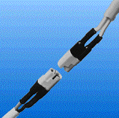

Gold Plated Contact
This connector solves the problem with i.e. connecting the lantern, motor or watertank sensors, signal horn, searching light, all places there screw terminal is used and more... Frequently connect and disconnect may hurt the cable strands then a screw terminal is used.
SureConnet 1 is a 2-pole or 3-pole cable connector, not much bigger than the cable itself.
| Small but big | Small physical size but handle 7 ampere and 2,5 sqmm. |
| Smooth | Passes thru small spaces equal to the cable. |
| Rugged |
The pins have a layer of gold for minimize corrosion and increase secure function from signal to power contact level. |
| Simple to mount |
The pins solders to the cable and then mounts in the shell. Observe, the shell can only fit one way. |
| Data |
Typical voltage/current 12/24 V / 7Amp Contact resistance 6 milliohm Max cable area 2,5 mm |
| Article No. | 20390 (2-pole) 20240 (3-pole) |